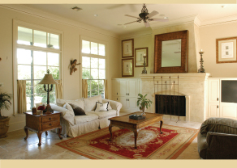
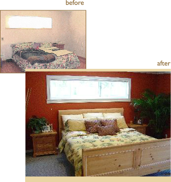
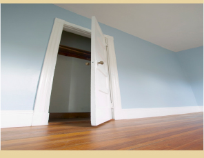
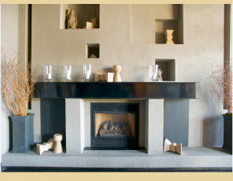
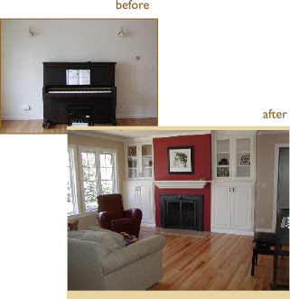
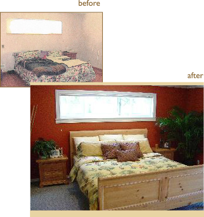
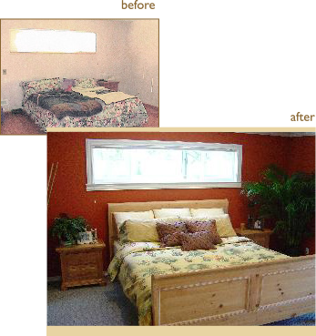

he first moment a potential buyer steps into a home is one of the most essential moments in the home buying experience. The first impression a home makes will stay with a buyer as a key part of the overall impression the client has of your home. In fact, buyers typically make their purchasing decisions within minuets of entering a home. With only one opportunity to make a favorable first impression, sellers can benefit from some professional guidance when preparing their homes for sale. Staging, a new and popular trend in the real estate industry, approaches your home with the intent of maximizing the unique and beautiful qualities that your home has to offer. By using staging, you can leave with a buyer an impression that will let your home stand out and above any others.
DE-CLUTTERING
very home has those little piles of mail and magazines that never seem to get put away. Organizing these small aspects around the house has a tremendous affect on the overall appearance of the home. By addressing specific aspects in the different rooms in your home, you’ll be amazed by how different and refreshing your home becomes through this simple technique.
Formal entertainment rooms should have surfaces that are primarily clear with a few appropriately placed decorative objects on tables. Bookshelves must appear orderly. Stacks of magazines and/or newspapers should be removed along with groups of little knick-knacks.
Kitchen counters should be primarily clear with a few appropriate appliance and decorative items placed on them. Remove the clutter that accumulates on refrigerator doors and bulletin boards
Bedrooms should be neat with beds made, clothes put away and no excess clutter apparent. In children’s rooms toys should be stored neatly or used for decoration.
Bathrooms should be clean and totally free of clutter except for the necessities and a few decorative items, such as a soap dish filled with attractive soap.
Closets are always a challenge but it is worth the effort to remove the overflow and rearrange the contents. Neat and tidy closets look bigger.
A FEW TOUCH UPS
elling an empty home presents several obstacles for a buyer to overcome. Without furniture to add perspective, rooms appear smaller and buyers have trouble visualizing the potential of the home. By adding furniture, a buyer can more easily picture their own family in the home. Uncomfortable temperatures and staleness can also settle into a home, making the buyer uncomfortable from the first moment they enter the home.
The staging answer:
Renting a few, but important, pieces of furniture can have a major influence on the buyers perspective of the home and is often well worth the investment.
A few additions and decorations will quickly fill empty space and create a more welcoming atmosphere
Inexpensive curtains go a long way in creating a warmer feeling
FURNISHING EMPTY HOMES
elling an empty home presents several obstacles for a buyer to overcome. Without furniture to add perspective, rooms appear smaller and buyers have trouble visualizing the potential of the home. By adding furniture, a buyer can more easily picture their own family in the home. Uncomfortable temperatures and staleness can also settle into a home, making the buyer uncomfortable from the first moment they enter the home.
These touch ups usually include:
Organizing clutter
Painting rooms
Adding decorative touches, such as plants and flowers
Reorganizing, removing, or repairing furniture in the home
Adjusting lighting, including windows and window treatments
Repositioning rugs around the home
HOMES CURRENTLY UNDER CONSTRUCTION
any people have suffered the frustration of trying to sell a home while making improvements and additions to the property. Buyers rarely have the patience to envision the true quality of the finished home while on their own search for the home that best suits them. A skilled stager, in this circumstance, can transform the uncompleted project into a home with very real potential to any buyer.

This strategy includes:
Careful positioning of blueprints of the finished home to help portray, from room to room, the direction of style and architecture.
A selection of sample materials to help the buyer truly visualize the home as a polished, finished piece.
A selection of photographs or drawings of interior designs that serve as inspiration for the renovation, displayed at appropriate locations at the site.
A PARTIALLY UPDATED HOME
n occasion, homes that have undergone partial renovations can seem somewhat unbalanced between the newer portions of the home and those parts which were unaffected by the renovation. Through staging, there are a few touches that can be added to a partially renovated home that can present the home as unified piece.
Adding new appliances or fixtures in the bathroom or kitchen area.
Installing new countertops or cabinetry.
Polishing any tile or ceramic surfaces.
Changing flooring.
Changing light fixtures.
A COMPLETE RENOVATION
With the intention of selling the property.
erhaps the most intimidating of all staging options, the total renovation of a home is a major decision and investment for the seller, but may, in the long run, present the best results when the home is sold. The Stager’s job is to determine what type of buyers is most likely to purchase the property. The expert can then help the seller put this process into a perspective that can guarantee a finished home that is suited to not only the seller’s budget, but also styles that are popular in the home market for that area.
A few steps in this method:
Determine current trends in colors, materials, appliances, and fixtures by looking at design magazines, visiting new development projects that are selling well, and consulting with a good real estate agent or interior designer for guidance.
Evaluate the type of property you have and what your target market will be. These factors will dictate the cost level of the materials and renovation.
Mix in some carefully selected higher-end materials in a less expensive renovation. For example, moderate to low-priced kitchen cabinets can be mixed with attractive but inexpensive flooring and some higher end appliances to create a top-of-the-line look.
Achieve a high-end look on a limited budget by paying close attention to the details. For example, combine classic ceramic tile in a bathroom with an appropriate accent of more expensive tumbled marble to create a feeling of luxury
Leave your own personal taste out of the equation. All too often a home with renovations done to the owner’s own taste can be difficult to sell. Sellers typically lack the perspective on other peoples’ preferences that is necessary in selecting a design that will appeal to the widest possible audience. For this reason, it is always advisable to work with those who have experience working with such projects.
Trinity Realty
We at Trinity Reality firmly believe that home is where your story begins. We understand that few decisions impact you and the life of your family greater than those involving your home. That’s why we strive to offer you an experience that is well-rounded by our commitment to service, our ever-growing knowledge of the industry, and creative extra touches that are tailor made with your needs and desires in mind. Trinity Reality is not a large corporation nor a franchise, but rather a local business whose first and greatest priority is to understand and satisfy your needs. Home is truly where you story begins. Let us help you write the first chapter.
 A FEW TOUCH UPS
A FEW TOUCH UPS